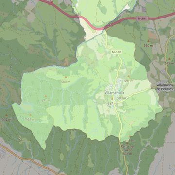

San Miguel Arcángel
- Arciprestazgo
- Navalcarnero
- Población
- Villamantilla
- Dirección postal
- c/ Antonino Rofazza, 15
- Código postal
- 28609
- Extensión
- 23,92 km² (2.392 ha)
- Teléfono
- 918 137 406
- Información demográfica
- De la parroquia · De la población (Villamantilla) · Del arciprestazgo (Navalcarnero)


Descargar mapaLímites según decreto
Los del término municipal